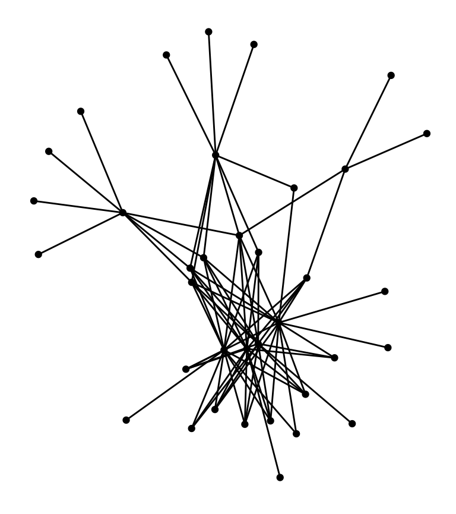
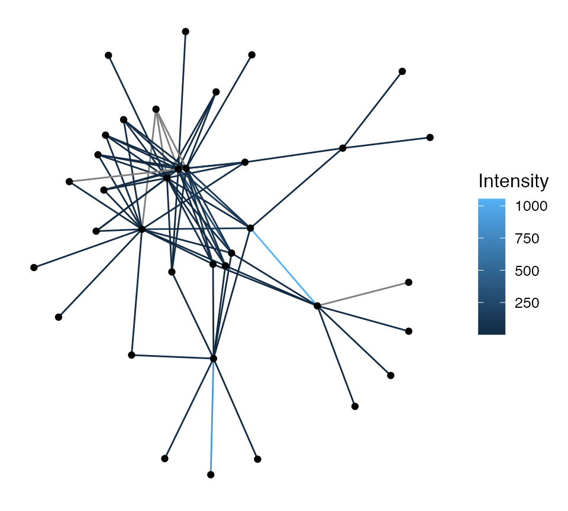

vignettes/intro.Rmd
intro.RmdThe ICON R package provides complex networks in edge list format that can be easily incorporated into network analysis pipelines. The package is based on the Index of COmplex Networks (ICON) website that curates complex networks and corresponding summary information (e.g. source, number of nodes & edges, discipline). Many publications cite the ICON website, however, since the complex networks in the database exist in distinct formats, the authors of each publication likely had to standardize a large set of networks. The ICON R package aims to decrease redundant scut work (data formatting) by providing a large number of complex networks from the ICON website in a standard format (network format = edge list; file format = binary R Data with extension .rda). Currently, the ICON R package provides 1075 complex networks. As can be reasonably inferred by reading this paragraph, referring to the package as “the ICON R package” can become quite tedious with multiple mentions; as such, the R package will be referred to simply as “ICON” for the remainder of this vignette and the website will be referred to as “the ICON website”.
To learn more about ICON, you can visit the associated website, GitHub repo, and CRAN page.
The ICON_data dataset (loaded in the Setup section) provides a summary of all the datasets that are available through ICON. Using head, we can take a look at the first 6.
head(ICON_data) #> Var_name Edges Directed Weighted #> 1 aishihik_intensity 78 FALSE TRUE #> 2 aishihik_prevalence 78 FALSE TRUE #> 3 amazon_copurchase 3387388 TRUE FALSE #> 4 arxiv_astroph 396160 FALSE FALSE #> 5 arxiv_condmat 186936 FALSE FALSE #> 6 arxiv_grqc 28980 FALSE FALSE #> Name Domain Year #> 1 Host-parasite web BioChem 1955-1983 #> 2 Host-parasite web BioChem 1955-1983 #> 3 Amazon co-purchasing network Economic 2003 #> 4 arXiv Astrophysics Collaboration Social 2007 #> 5 arXiv Condensed Matter Collaboration Social 2007 #> 6 arXiv General Relativity Quantum Cosmology Collaboration Social 2007 #> Source #> 1 https://www.nceas.ucsb.edu/interactionweb/html/canadian_fish.html #> 2 https://www.nceas.ucsb.edu/interactionweb/html/canadian_fish.html #> 3 http://snap.stanford.edu/data/amazon0601.html #> 4 http://snap.stanford.edu/data/ca-AstroPh.html #> 5 http://snap.stanford.edu/data/ca-CondMat.html #> 6 http://snap.stanford.edu/data/ca-GrQc.html #> Description #> 1 Undirected, weighted, bipartite adjacency network of Canadian freshwater fish (hosts) and their metazoan parasites (parasites). The name of the lake to which this dataset corresponds is the first word of the dataset (text prior to the underscore). Network is formatted as an edgelist. Node labels (words) were provided in the raw dataset, which can be found at the source URL (below). On the webpage at the source URL (below), select the appropriate named link under the "Data files" heading. #> 2 Undirected, weighted, bipartite adjacency network of Canadian freshwater fish (hosts) and their metazoan parasites (parasites). The name of the lake to which this dataset corresponds is the first word of the dataset (text prior to the underscore). Network is formatted as an edgelist. Node labels (words) were provided in the raw dataset, which can be found at the source URL (below). On the webpage at the source URL (below), select the appropriate named link under the "Data files" heading. #> 3 Directed, unweighted network of items for sale on amazon.com in June 2003 and the items they recommend (via the Customers Who Bought This Item Also Bought feature). If one item is frequently co-purchased with another, then the first item recommends the second. #> 4 Undirected, unweighted author collaboration network in arXiv astrophysics section. #> 5 Undirected, unweighted author collaboration network in arXiv condensed matter section. #> 6 Undirected, unweighted author collaboration network in arXiv general relativity and quantum cosmology section. #> Citation #> 1 Arai HP, Mudry DR. Protozoan and metazoan parasites of fishes from the headwaters of the Parsip and McGregor Rivers, British Columbia: a study of possible parasite transfaunations. Canadian Journal of Fisheries and Aquatic Sciences. 1983; 40: 1676-1684. Arthur JR, Margolic L, Arai HP. Parasites of fishes of Aishihik and Stevens Lakes, Yukon Territory, and potential consequences of their interlake transfer through a proposed water diversion for hydroelectrical purposes. Journal of the Fisheries Research Board of Canada. 1976; 33: 2489-2499. Bangham RV. Studies on fish parasites of Lake Huron and Manitoulin Island. American Midland Naturalist. 1955; 53: 184-194. Chinniah VC, Threlfall W. Metazoan parasites of fish from the Smallwood Reservoir, Labrador, Canada. Journal of Fish Biology. 1978; 13: 203-213. Dechtiar AO. Parasites of fish from Lake of the Woods, Ontario. Journal of the Fisheries Research Board of Canada. 1972; 29: 275-283. Leong TS, Holmes JC. Communities of metazoan parasites in open water fishes of Cold Lake, Alberta. Journal of Fish Biology. 1981; 18: 693-713. #> 2 Arai HP, Mudry DR. Protozoan and metazoan parasites of fishes from the headwaters of the Parsip and McGregor Rivers, British Columbia: a study of possible parasite transfaunations. Canadian Journal of Fisheries and Aquatic Sciences. 1983; 40: 1676-1684. Arthur JR, Margolic L, Arai HP. Parasites of fishes of Aishihik and Stevens Lakes, Yukon Territory, and potential consequences of their interlake transfer through a proposed water diversion for hydroelectrical purposes. Journal of the Fisheries Research Board of Canada. 1976; 33: 2489-2499. Bangham RV. Studies on fish parasites of Lake Huron and Manitoulin Island. American Midland Naturalist. 1955; 53: 184-194. Chinniah VC, Threlfall W. Metazoan parasites of fish from the Smallwood Reservoir, Labrador, Canada. Journal of Fish Biology. 1978; 13: 203-213. Dechtiar AO. Parasites of fish from Lake of the Woods, Ontario. Journal of the Fisheries Research Board of Canada. 1972; 29: 275-283. Leong TS, Holmes JC. Communities of metazoan parasites in open water fishes of Cold Lake, Alberta. Journal of Fish Biology. 1981; 18: 693-713. #> 3 Leskovec J, Adamic L, Adamic B. The Dynamics of Viral Marketing. ACM Transactions on the Web (ACM TWEB). 2007; 1. #> 4 Leskovec J, Kleinberg J, Faloutsos C. Graph evolution: Densification and shrinking diameters. ACM Transactions on Knowledge Discovery from Data. 2007; 1(1). #> 5 Leskovec J, Kleinberg J, Faloutsos C. Graph evolution: Densification and shrinking diameters. ACM Transactions on Knowledge Discovery from Data. 2007; 1(1). #> 6 Leskovec J, Kleinberg J, Faloutsos C. Graph evolution: Densification and shrinking diameters. ACM Transactions on Knowledge Discovery from Data. 2007; 1(1).
Clearly, this is not aesthetic due to the number of columns that ICON_data contains. However, it should provide some comfort that the amount of metadata available within ICON_data will likely enable tracking down the original dataset. To get a nicer view of the available datasets, let’s take a look at only a subset of the available metadata.
head(ICON_data[, c("Var_name", "Edges", "Directed", "Name")], n = 5) #> Var_name Edges Directed Name #> 1 aishihik_intensity 78 FALSE Host-parasite web #> 2 aishihik_prevalence 78 FALSE Host-parasite web #> 3 amazon_copurchase 3387388 TRUE Amazon co-purchasing network #> 4 arxiv_astroph 396160 FALSE arXiv Astrophysics Collaboration #> 5 arxiv_condmat 186936 FALSE arXiv Condensed Matter Collaboration
A key difference to note is that the Var_name column refers to the dataset name that should be used when accessing it through ICON whereas the Name column lists a more descriptive dataset name with little programmatic relevance. Two salient points should be made here. First, descriptions of the information contained in each column of ICON_data can be accessed in the package documentation via ?ICON_data or equivalents. Second, package metadata is generally available in R data packages via package documentation, which avoids the need for a dataset like ICON_data. However, since the networks that ICON provides can be quite large, even in a compressed binary format, they are not hosted within the package on the Comprehensive R Archive Network (CRAN). Instead, the desired packages are only downloaded locally when the user instructs ICON to do so via the get_data function (explored in the next section). Although this comes with the disadvantage of not having all datasets immediately available upon installation of ICON, it does save ICON users considerable space if they only wish to use a small subset of the available datasets.
Once the list of available datasets has been explored, the complex networks can be downloaded using the get_data function and the Var_name column in ICON_data. For example, the first network in ICON_data has Var_name set to aishihik_intensity, so we download it and peek as follows.
get_data("aishihik_intensity") #> DATASET(S) aishihik_intensity LOADED head(aishihik_intensity) #> # ICON complex network: 6 edges and 1 edge attributes #> Fish Parasite Intensity #> 1 1 V1 5.8 #> 2 1 V9 7.0 #> 3 1 V16 3.0 #> 4 1 V22 1.0 #> 5 2 V3 7.2 #> <and 1 more edges>
Every complex network in ICON is provided as an edgelist stored in a data frame. Each row of the data frame corresponds to a single edge and the first two columns contain the nodes that define the edge; for directed networks, the first column will always be the source (from) and the second column will always be the sink (to). Note that since only an edgelist is provided, nodes of degree zero will not be included. Weighted (and some unweighted) networks will contain more than two columns; the additional columns represent either edge weights or other edge attributes. The get_data function can also download multiple datasets at once. Note that the get_data’s envir parameter can be modified to select a different environment; by default, the objects will load on the global environment (.GlobalEnv).
get_data(c("coldlake_intensity", "fullerene_c60")) #> DATASET(S) coldlake_intensity fullerene_c60 LOADED head(coldlake_intensity) #> # ICON complex network: 6 edges and 1 edge attributes #> Fish Parasite Intensity #> 1 1 V2 2.1 #> 2 1 V5 NA #> 3 1 V8 1.7 #> 4 1 V12 3.5 #> 5 1 V16 1.7 #> <and 1 more edges> head(fullerene_c60) #> # ICON complex network: 6 edges and 0 edge attributes #> Node1 Node2 #> 1 0 1 #> 2 0 2 #> 3 0 3 #> 4 1 4 #> 5 1 5 #> <and 1 more edges>
get_data also lends itself to a simple solution (following code chunk) to download all the networks available through ICON, however, this should be used with caution as there are a large number of them. The following chunk is not actually run in the vignette.
# download all available complex networks get_data(ICON_data$Var_name)
Once downloaded, the complex networks can be stored locally in a binary (e.g. RDA/RData, RDS) or plain-text (CSV, TXT) format; storing it locally removes the reliance on an internet connection for future use.
Although ICON provides the complex networks, it does not provide functionality to analyze or visualize them. However, the as_network function is provided to permit use of the network and ggnetwork R packages for analysis and visualization, respectively. The following code shows how to generate an object of class network using a previously downloaded complex network.
# make sure that the downloaded network has class `ICON` class(aishihik_intensity) #> [1] "ICON" "data.frame" # convert to class `network` conv_network <- as_network(aishihik_intensity) # check if the converted network has the correct class class(conv_network) #> [1] "network" # peek at the converted network (pay attention to number of edges) conv_network #> Network attributes: #> vertices = 36 #> directed = FALSE #> hyper = FALSE #> loops = FALSE #> multiple = FALSE #> bipartite = FALSE #> total edges= 78 #> missing edges= 0 #> non-missing edges= 78 #> #> Vertex attribute names: #> vertex.names #> #> Edge attribute names: #> Intensity # check number of vertices in initial ICON object length(unique(c(aishihik_intensity[, 1], aishihik_intensity[, 2]))) #> [1] 36 # check number of edges in initial ICON object nrow(aishihik_intensity) #> [1] 78
The initial network (named aishihik_intensity) and the converted network (named conv_network) both contain 36 vertices and 78 edges. Once we have an object of class network, we can visualize it easily using ggnetwork (a ggplot2 extension).
# ggnetwork fortifies objects of class `network` without additional code # the aes parameters should be used as-is ggplot(conv_network, aes(x = x, y = y, xend = xend, yend = yend)) + geom_edges() + geom_nodes() + theme_blank()

conv_network also has an edge attribute named Intensity (see the name of the third column name in aishihik_intensity). This edge attribute can be used to color the edges as follows.
ggplot(conv_network, aes(x = x, y = y, xend = xend, yend = yend)) + geom_edges(aes(color = Intensity)) + # this line changed geom_nodes() + theme_blank()

Implementing the as_network function and ICON class thus makes ICON datasets compatible with the network and ggnetwork packages, considerably simplifying the processes for network analysis and visualization. ICON’s GitHub README provides sample code to analyze and visualize ICON complex networks using igraph as an alternative.